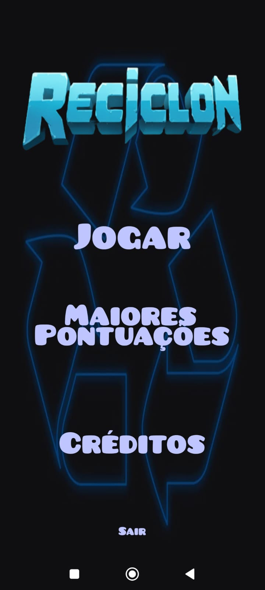
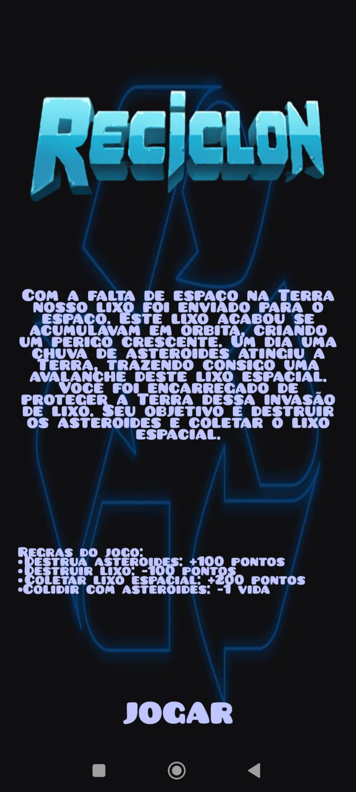
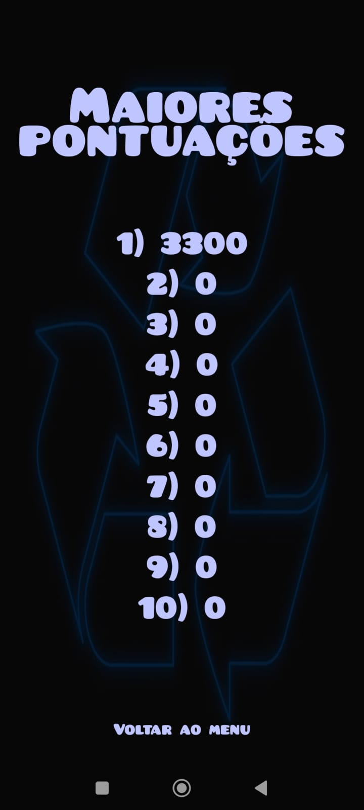
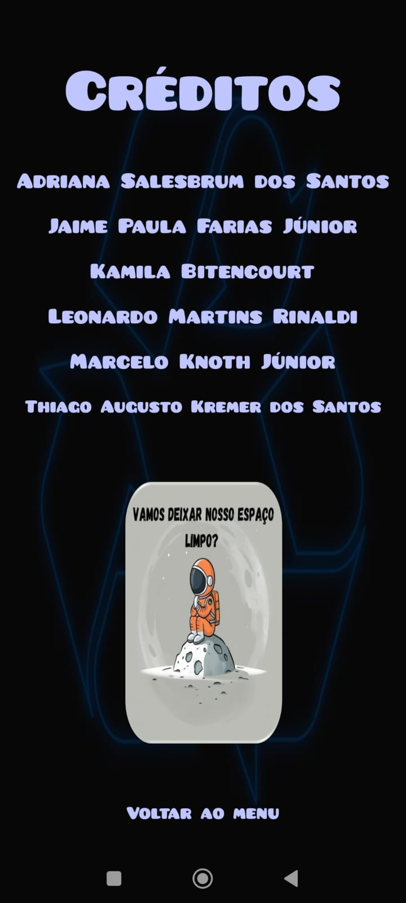

Conteúdo do jogo




Nosso objetivo é transformar aprendizado em diversão, promovendo a conscientização ambiental de forma interativa. Neste jogo, você será desafiado a acabar com lixo comumente encontrados pela cidade, aprender sobre o impacto dos materiais no meio ambiente e descobrir dicas práticas para adotar um estilo de vida mais sustentável.
O site foi criado para complementar o jogo, oferecendo informações, dicas de reciclagem, curiosidades e muito mais. Junte-se a nós nessa missão de cuidar do planeta, enquanto jogamos e aprendemos juntos!

O nosso jogo de reciclagem não é apenas sobre se divertir; ele também tem o objetivo de promover um futuro mais sustentável para todos. E para isso, estamos alinhados com as ODS, ou Objetivos de Desenvolvimento Sustentável, uma iniciativa global criada pela ONU para transformar o mundo até 2030.
As ODS são 17 metas que abordam questões essenciais para o nosso planeta, como a erradicação da pobreza, a proteção do meio ambiente e a promoção de uma vida digna para todos. Entre elas, destacam-se objetivos como a educação de qualidade, a produção e consumo responsáveis, e a ação contra a mudança global do clima – todos eles interligados com a prática da reciclagem e o cuidado com o meio ambiente.
Ao jogar e se envolver com o nosso site, você estará não só se divertindo, mas também contribuindo para um futuro mais sustentável, alinhando suas ações às metas globais que fazem a diferença no mundo.
Somos um grupo apaixonado por tecnologia e sustentabilidade. Criamos um jogo e um site para estimular, de forma educativa e interativa, a reciclagem. O jogo oferece uma experiência dinâmica, onde estimula os jogadores a interagir com práticas sustentáveis, contribuindo para a conscientização da reciclagem no dia a dia.
Nosso objetivo é, por meio do entretenimento e da educação, inspirar ações mais responsáveis e contribuir para um futuro mais sustentável, onde o aprendizado sobre a reciclagem se torna uma parte natural do cotidiano de todos.
Para baixar o nosso jogo, acesse o link ao lado: Reciclon